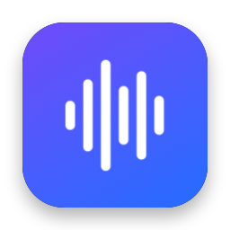
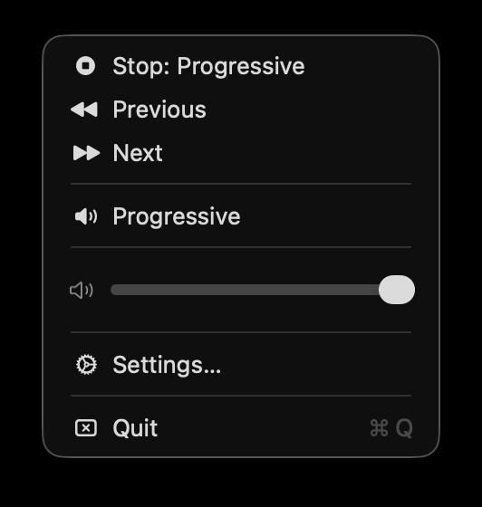
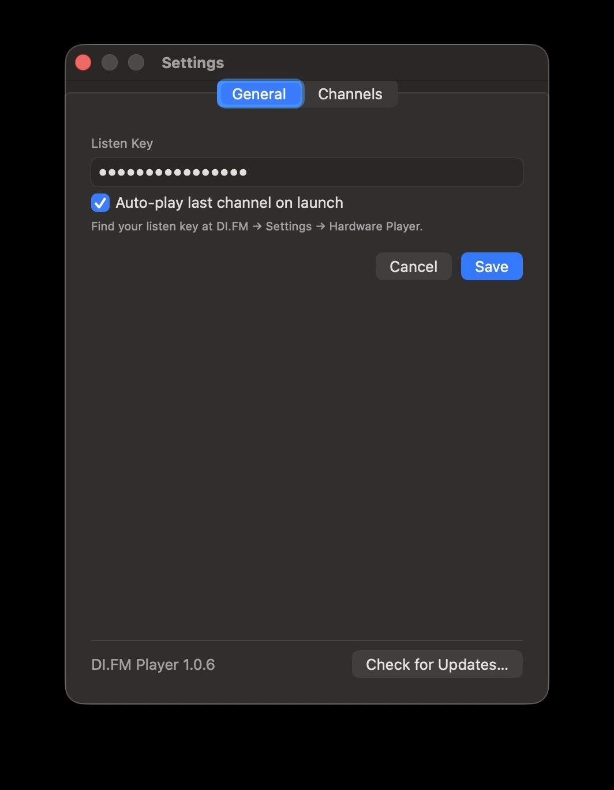
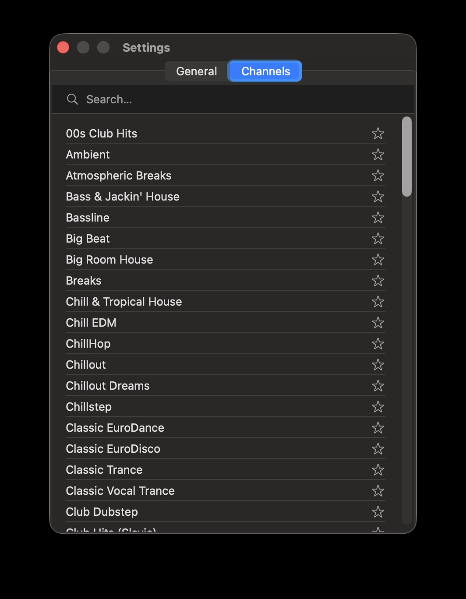

DI.FM Player for macOS
A tiny native menu bar app for DI.FM Premium. One click to play, no window, no Dock icon.



What it does
Lives in your menu bar
Left-click to play or pause. Right-click for favorites, volume and settings.
Media keys
Play/pause from your keyboard, headphones or Control Center.
Picks up where you left off
Resumes your last channel when the app launches.
Keeps playing
Reconnects on its own after network hiccups or when your Mac wakes from sleep.
Your favorites
Star channels from the full DI.FM list and switch with next/previous.
Updates itself
New versions install automatically via Sparkle.
Getting started
- You need a DI.FM Premium subscription.
- Download the app, unzip it and move it to
/Applications. - Open it, right-click the menu bar icon and choose Settings…
- Paste your listen key (DI.FM → Settings → Hardware Player) and save.